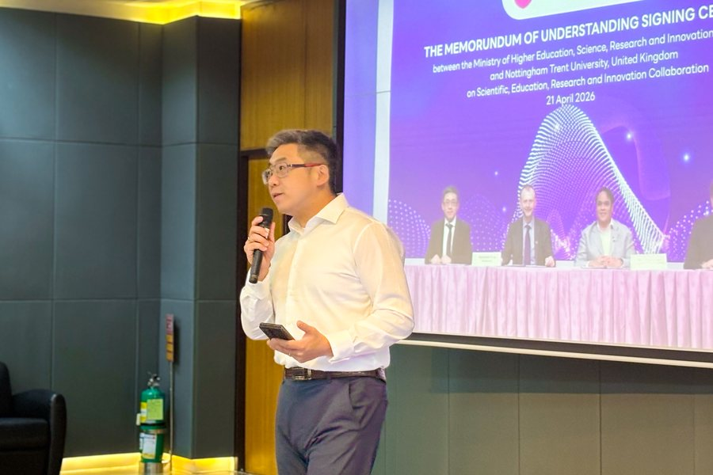
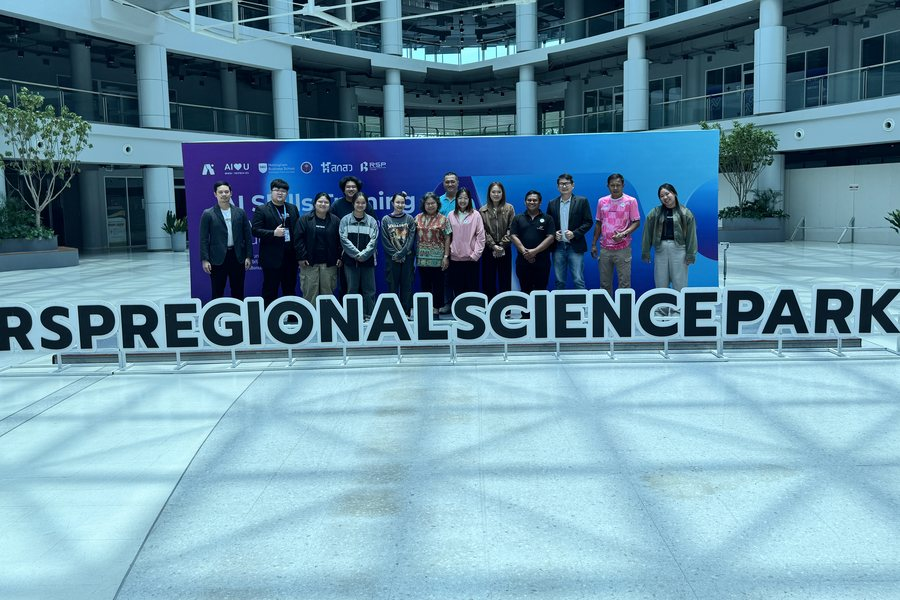
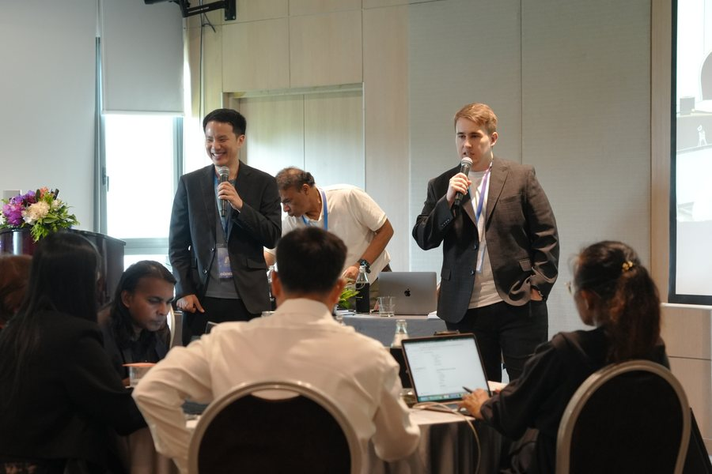

What is coming up at CBIT, where to hear Professor Xiao Ma speak, and CBIT’s news.
Coming up
November 2026
Nottingham Global Entrepreneurship Week
CBIT runs Nottingham Global Entrepreneurship Week — the only GEW activity in the East Midlands — and co-hosts the annual Innovate UK AI for SME Conference.
The conference’s site, ai4smes.co.uk, is hosted by CBIT and supported by Innovate UK.
Keynotes and masterclasses
Invite Professor Xiao Ma to speak
A keynote for your conference, summit or leadership day, or a masterclass for your leaders, teams or researchers.
From April to June 2026, Thailand’s national AI programme ran AI Skills Training and Workforce Development for Future Industries across the country. The programme is funded by Thailand’s Ministry of Higher Education, Science, Research and Innovation (MHESI) and delivered by CBIT and CMU STeP.
Sessions ran in five tracks: CEOs, business for incubators, food manufacturing, marketing and data, and wellness and tourism, in the north, north-east, east and south of Thailand.
500+ executives trained in Thailand’s national AI programme.

Professor Xiao Ma teaching on the food manufacturing track, southern Thailand, April 2026

Participants at Regional Science Park Northeast 2, April 2026

Trainers on the wellness and tourism track, eastern Thailand, April 2026
CBIT’s sister centre opens at Chiang Mai University
CBIT’s sister centre at Chiang Mai University Science and Technology Park (STeP) opened on 12 June 2026. It hosts repeat programmes, soft landing for ventures and joint bids.
NTU signs a five-year memorandum of understanding with Thailand’s Ministry of Higher Education, Science, Research and Innovation
In Bangkok, NTU’s Vice-Chancellor signed a five-year memorandum of understanding with the Ministry (MHESI), and a sister-centre agreement with Chiang Mai University’s Science and Technology Park.
UKRI funds EASE, an art and science project for environmental sustainability
EASE (Entrepreneurship, Art and Science for Environmental Sustainability) won funding in the second round of UKRI’s Cross-Research Council Responsive Mode. The consortium is led by De Montfort University. At NTU, Professor Xiao Ma co-leads the project with Dr Iryna Kuksa, NTU School of Art & Design, and CBIT leads its “Build & Test” work.